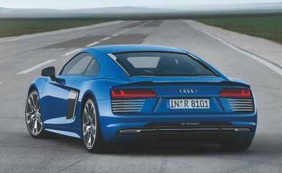
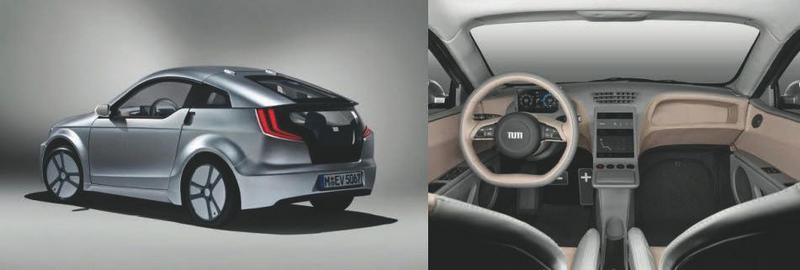

Электромобили из Германии.
2.1.1. Электромобили Ауди
Выпуск нового электромобиля Audi А9 e-tron (см. рис. 2.1) положил начало созданию новой серии электрокаров, которые постепенно заменили популярный Audi A3 e-tron.

Рис. 2.1. Электромобиль Audi А9 e-tron
Запас хода Audi А9 e-tron на одной подзарядке составит 500 км (311 миль). Кроме того, модель стала беспилотным автомобилем четвертого уровня (на один уровень выше, чем дебютант прошлого года А8). А к 2020 году компания будет выпускать уже три модели электрокаров. Первым выйдет в производство концептуальная модель e-tron Quattro с дальностью пробега в 500 км. А к 2025 году 25 % всех производимых автомобилей Audi будут полностью электрическими. Три электродвигателя концепта e-tron Quattro при совместной работе имеют выходную мощность 429 л. с., а режим более спортивной езды автомобиля позволяет увеличивать мощность до 496 л. с. и крутящий момент до 800 Н-м. Электродвигатели А9 e-tron и комплект силовой электроники по своим техническим характеристикам пока не имеют равных в Европе.
Внимание, важно!
Некоторые производители предпочитают синхронные двигатели с высокой плотностью энергии, но со сравнительно низкими показателями крутящего момента. Существуют и асинхронные двигатели, которые, как правило, имеют похожую выходную мощность, но с более высокими показателями крутящего момента. Эти вопросы мы рассматривали в первой главе нашей книги. С 2025 года электрические автомобили Audi будут оснащаться только асинхронными двигателями. По результатам многочисленных исследований, которые автору удалось получить оперативными путями, асинхронные электрические двигатели работают намного эффективнее, чем их синхронные аналоги.
Система, разработанная для Audi А9 e-tron, распределяет энергию всем четырем колесам системой управления передвижения, которая использует электронную векторизацию крутящего момента для перераспределения подачи электроэнергии задним колесам в зависимости от их уровня сцепления с трассой. Такой тип коробки передач имеет два рабочих режима: Drive и Sport. А9 e-tron и Об e-tron оснащены большой аккумуляторной батареей емкостью 95 кВт с жидкостным охлаждением, которая будет установлена под полом салона. Скорость разгона А9 e-tron со стартовой точки до 100 км/ч составит 4,6 сек. Предельная скорость электрокара будет находиться в пределах 212 км/ч. Кроме традиционного способа подзарядки владельцы А9 e-tron могут воспользоваться и индуктивной (беспроводной) зарядкой на станциях с мощностью 11 кВт. Электрокар может похвастаться и функцией автономной парковки для правильного размещения авто на зарядной зоне.
За электрическим SUV последуют полноразмерный электрический седан и другой SUV меньшего размера, которые являются частью программы Audi по запуску в производство к 2020 году трех моделей электромобилей. Название e-tron будет также комбинироваться с традиционными названиями моделей немецкого автопроизводителя, к примеру А6 e-tron, А7 e-tron, А8 e-tron и т. д. Audi уже использует e-tron в названиях моделей A3 Sportback e-tron, гибрида 07 e-tron, а также R8 e-tron. К примеру, модель R8 e-tron обладает запасом хода в 450 км за счет аккумуляторов увеличенной емкости. Электромобиль имеет мощность 462 л. с. и разгоняется до 100 км/ч за 3,9 сек.
Внешне электромобиль отличается от обычной версии другой решеткой спереди, а также некоторыми накладками по кругу.
Электромобиль Audi А2. Технические характеристики
В электромобиле была установлена аккумуляторная батарея емкостью 115 кВт/ч. Благодаря этому транспортное средство способно увеличивать мощность до 55 кВт, что отвечает приблизительно объему 1,4 л для бензинового двигателя. Эффективность такой батареи доказывает установка в погрузчик, который способен увеличить время своей работы в четыре раза, если сравнивать действия с обычным аккумулятором. Именно этот емкостный агрегат был установлен на немецкий автомобиль Audi А2.
Может сложиться впечатление, что автомобиль «пустой», однако это не так. Организаторы эксперимента оснастили его всем необходимым: кондиционером, усилителем руля, аудиосистемами, системами безопасности и даже подогревом сидений. Поэтому потребление энергии, кроме перемещения, требовалось для выполнения и других функций. Технология находится на рассмотрении Министерства экономики Германии, поэтому вполне возможно, что уже в скором времени эта отрасль получит новый толчок. Уже есть планы, по которым к 2020 году правительство Германии намеревается достичь показателя в один миллион электрических автомобилей на европейских дорогах. Причем это не только транспортные средства личного пользования, но и другого назначения. Используемый аккумулятор на автомобиле А2 способен обеспечить общий пробег на уровне 500 тысяч километров.
Есть и еще один рекорд в этом направлении, поставленный Japan Electric Vehicle Club. Однако он касается чистого эксперимента. Это значит, что для повседневного использования такой электрокар не приспособлен. В результате японцам удалось побить рекорд – 1 тыс. км без подзарядки.
2.1.2. Электромобили BMWВнимание, важно!
Какие бы разработки не велись в этой области, они сводятся к тому, что их должны поддержать гиганты автомобильной промышленности. Только им под силу внедрить достойное новшество, распространяя его по всему миру, создавая необходимую инфраструктуру, сервис и прочие необходимые средства. Все это требует больших затрат, поэтому предложенная идея может быть воплощена в жизнь, если расчеты по ее реализации дадут действительно существенную прибыль и установят новую планку стандартов на мировом рынке.
Электрический хэтчбек BMW i3 со времени своего первого появления на рынке США в мае 2014 года претерпел множество улучшений и обновлений, однако в его последнем апгрейде 2017 года эти изменения заметны в наибольшей степени. Улучшения серийных электрокаров BMW i3 в основном затронули аккумуляторные батареи, которые стали еще мощнее и увеличили запас хода в соответствии с жестким американским циклом езды ЕРА. Емкость батареи, по сравнению с прошлой версией, увеличилась на целых 50 % с 22 кВт/ч до 33 кВт/ч. Это позволило электрокару получить 183 км дальности пробега без дополнительной подзарядки (на 53 км больше, чем у версии 2016 года). Кроме этой модели, компания продолжает выпускать на рынок и свой гибридный автомобиль i3 Rex, также с увеличенным пробегом. Автомобиль оснащен 0,65-литровым двухцилиндровым ДВС, который выступает в качестве генератора электричества. Объем топливного бака составляет всего 9 л.
В прошлогодней американской версии электрокара объем бака был ограничен до 7,2 л. Rex, как и его «серийный собрат», получит 33 кВт/ч батарею. Новая модель i3 Rex имеет 156-киллометровый пробег в полностью электрическом режиме езды, а вместе с полным баком топлива авто сможет проехать около 290 км. Расход топлива при совмещенной работе электродвигателя (экв. 2,12 л/100 км) и ДВС (6,72 л/100 км) составляет 1,99 л/100 км. Новый аккумуляторный блок получил более мощные литий-ионные батареи емкостью 94 А-ч (60 А-ч у прошлой модели). Компания-производитель оставит возможность клиентам выбирать между новыми 33 кВт/ч батареями и старыми 22 кВт/ч для установки их в своих базовых моделях. Выходная мощность i3 2017 года выпуска составляет 170 л. с., а максимальный крутящий момент заднего привода – 250 Н-м, который, кстати, не изменился. Скорость разгона 0-97 км/ч для полностью электрических моделей из серии составляет 7 сек., а для Rex – чуть больше 8 сек. Что касается веса автомобилей, электрокар i3 весит 1343 кг, а гибрид Rex – 1467 кг. Их вес немного увеличился по сравнению с прошлыми версиями. Электромобиль модели i3 2017 года имеет встроенное зарядное устройство мощностью 7,4 кВт. Теперь электрокар с новыми батареями нужно будет заряжать около 4,5 ч на 240-вольтных зарядных станциях второго уровня (Level 2) вместо прошлых 3,5 ч. А вот на высокоскоростных зарядных станциях DC fast-charging с прежней мощностью 50 кВт авто заряжается до 80 % уже за 40 мин. Сейчас для модели i3 нового поколения стандартным является уровень комплектации DekaWorld, в то время как для прошлых применялись MegaWorld, GigaWorld и TeraWorld. Теперь современная система выдачи данных дорожного движения в режиме реального времени, а также интегрированная и универсальная система дистанционного открытия дверей гаража будут стандартной опцией. В России покупка BMW i3 в базовой комплектации обойдется порядка 35 тыс. евро.
Далее представлена видеоссылка обзора этой модели для самостоятельного ознакомления и анализа: http://autotesla.com/obzor-2017-bmw-iy.
Серийное производство среднеразмерного электрического седана i5 начинается в 2025 году. По размерам модель чуть больше, чем BMW 3 series, и составит конкуренцию будущему электромобилю Tesla Model 3. Как и BMW i3, новинка имеет как полностью электрическую, так и гибридную версии. При этом электрическая версия будет иметь два электромотора на передней и задней осях мощностью 135 и 225 л. с. соответственно.
Электромобиль BMW i3. Технические характеристики
BMW i3 называют еще Mega City Vehicle – автомобиль мегаполиса. Это справедливо, поскольку он сделан из легких композитных материалов, а это сильно уменьшает вес электрокара. Соответственно, чем меньше вес электромобиля, тем ниже количество потребляемой электроэнергии. BMW i3 производится в сборочном цехе в Лейпциге, созданном специально для i-каров. Компания BMW собирается выпускать 40 000 электромобилей каждый год, используя углеволокна в своем производстве.
Галетная батарея является фундаментом BMW i3, такой батареей также пользуется электромобиль Rolls-Royce 102ЕХ.
Электромобиль BMW ACTIVEE. Технические характеристики
2.1.3. Электромобили Volkswagen
Volkswagen выпустил новый фургон e-Crafter с электроприводом. Электромобиль способен проехать более 200 км на одной зарядке. Volkswagen e-Crafter имеет выходную мощность 134 л. с. и крутящий момент 290 Н-м. Предельная скорость электрического фургона составляет 80 км/ч, что достаточно для перевозки грузов весом 1700 кг на общественных (городских) дорогах. Однако с такой скоростью проблематично придерживаться скорости дорожного потока на скоростных автомагистралях.
Электродвигатели, питающиеся от литий-ионных батарей емкостью 43 кВт/ч, установлены под «полом» грузового отсека. Запас хода напрямую зависит от веса перевозимого груза. В среднем фургон может проехать около 208 км на одной зарядке. Volkswagen e-Crafter нужно будет заряжать на 40-киловаттных зарядных станциях DC Fast Charger, где всего за 45 мин. заряд аккумулятора поднимается до 80 %. По сравнению с другим электрическим фургоном Nissan e-NV200, дальность пробега у Volkswagen e-Crafter на 38 км выше. Но у первого есть заметное преимущество в максимальной допустимой скорости – 120 км/ч.
Внимание, важно!
У модели Volkswagen e-Crafter большой потенциал в плане запаса хода на одной зарядке, поскольку его разрабатывали с возможностью дальнейшего интегрирования новых усовершенствованных батарей. Таким образом, дальность пробега в будущем может в разы увеличиться по мере разработки технологических новшеств в аккумуляторах.
Что касается грузоподъемности, Volkswagen e-Crafter может вместить в себя столько же груза, сколько и его предшественники в лице дизельных или бензиновых моделей, выпущенных ранее. Аэродинамические показатели электрического фургона также не могут не восхищать, коэффициент лобового сопротивления составляет 0,33, как и у привычных для нас фургонов с ДВС. Электрический Volkswagen e-Crafter несложно отличить от обычных машин по дневным ходовым огням, синим вставкам на вентиляционной решетке, а также специальной окраске кузова, также синего цвета. Что касается салона, там не наблюдаются особых изменений, за исключением замены счетчика оборотов двигателя на измеритель мощности.
2.1.4. Электромобили Mercedes-BenzПолноприводный кроссовер Generation EQ от компании Mercedes-Benz с 402-сильным электроприводом выпущен ограниченной серией и поступит в серийное производство в 2025 году, когда и станет мощным конкурентом для нынешних моделей Audi e-tron Quattro, Jaguar E-Pace, Tesla Model X.
Этот электрокар с пробегом до 500 км на одной зарядке стал первой моделью из нового подбренда EQ при Mercedes-Benz. Название является некой игрой слов между IO и EQ (электрический интеллект). Пятидверный Generation EQ совмещает в себе функцию беспилотного вождения, различные сетевые возможности, а также новейшую систему безопасности. Для повышения аэродинамичности кроссовера дизайнеры Mercedes-Benz заменили традиционные наружные зеркала заднего вида цифровыми камерами, а двери авто будут открываться не механически с помощью ручек, а удаленно.
Инновационные разработки компании реализованы посредством двух бесщеточных электрических двигателей, один из которых установлен на передней оси, а второй – на задней. Выходная мощность при их совмещенной работе составляет около 402 л. с., и максимальный крутящий момент – 700 Н-м. Это позволяет электрокару разгоняться со стартовой точки до 100 км/ч менее чем за 5 секунд.
Батареи с блочной структурой и емкостью более 70 кВт/ч производятся сестринской компанией Deutsche Accumotive. Они обеспечивают около 500 км (NEDC) езды без подзарядки. Что интересно, Tesla Model X P90D с почти одинаковыми габаритами и более мощными батареями (90 кВт/ч) уступает Generation EQ в дальности пробега – 470 км (NEDC). Электрокар можно будет подзаряжать с помощью бытовых розеток и устройств Wallbox, а также на индуктивных зарядных станциях. Продолжительность зарядки 4,5 ч.
Generation EQ получил полностью обновленный дизайн интерьера, специально разработанного для новой модельной линейки Mercedes-Benz. На низко расположенной приборной доске красуется 24-дюймовый дисплей с высоким разрешением и уникальной графикой. Нельзя не упомянуть и многофункциональный руль с сенсорными панелями, а также современный экран с органическими светодиодами. Изображения с внешних камер будут отображаться в реальном времени на дисплеях, встроенных на дверях авто.
Серийная модель вмещает в себя 5 человек.
2.1.5. Максимально легкий электромобильТакже заслуживает внимания тот факт, что в Германии разработан бюджетный электромобиль модели Visio.M, который был представлен Мюхенским техническим университетом. Особенности этого электромобиля представлены на рис. 2.2.

Рис. 2.2. Электромобиль модели Visio.M с внешней стороны и из салона
Разработчики электромобиля постарались сделать его максимально легким, в итоге его масса составляет всего 535 кг, а ширина и высота Visio.M равняются 1550 и 1310 мм соответственно. Кузов электромобиля выполнен из поликарбоната и пластика, усиленного углеволокном, что позволило снизить массу. Электромотор мощностью 20 л. с. позволяет электромобилю набирать максимальную скорость до 120 км/ч, а пробег на одной подзарядке составляет порядка 160 км. Электромобиль оснащен продвинутой климатической установкой, что позволяет затрачивать на обогрев и на охлаждение салона минимум электроэнергии. Кроме того, Visio.M обладает некоторыми инновационными системами безопасности, которые активируются в случае опасности столкновения.